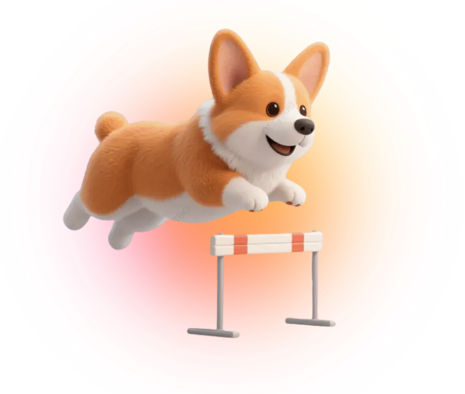
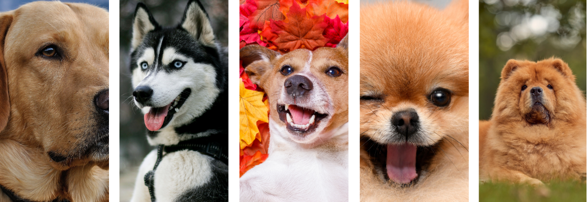
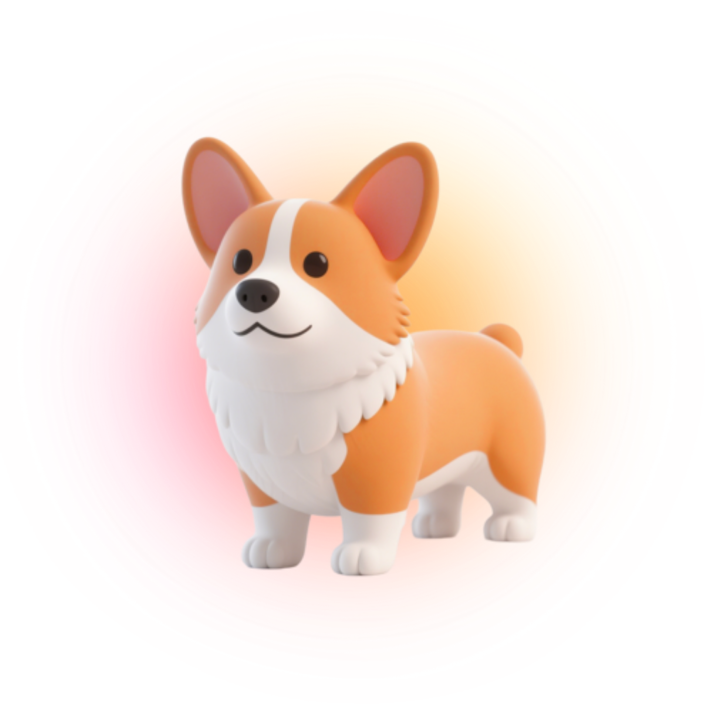

Upload a photo and let our advanced AI instantly identify your dog's breed and unique personality.


HOW THE AI WORKS
Input Data
Provide a photo of a dog. Ensure clear lighting for optimal feature extraction.
Feature Scanning
Our advanced neural network analyzes structural patterns, coat textures, and key markers.
Algorithmic Match
The model cross-references thousands of parameters against our comprehensive breed database.
Gemini Insights
Receive a detailed breakdown, including care advice and behavioral traits, powered by Gemini.
INITIALIZE SCAN
Our Story
is more than a project. It is a memory and a tribute.
I once had a dog, a stray who became part of my life. I never knew his breed and to me it did not matter. He was my companion and my friend. Later I found out he was half Spitz and half Corgi. I was amazed, because behind that little face was a story I never expected.
He is gone now. He passed away from distemper. It was one of the hardest moments of my life. But in his memory I wanted to create something meaningful. Something that could help others who have felt the same curiosity and love.
PawPrint is for anyone who has ever wondered about their dog’s story. It is for strays, for mixes, for the unknown, and for the beloved pets who leave us too soon. Every dog has a story and every story deserves to be told.

THE MINDS BEHIND THE AI

GENE ELPIE LANDOY
Developer | AI Engineer
Spearheading the integration of advanced machine learning architectures to decode canine genetics. Driven by a passion to bridge the gap between complex neural networks and accessible, everyday pet care.